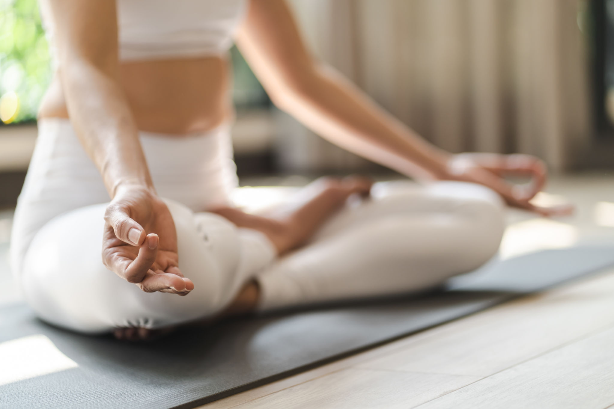
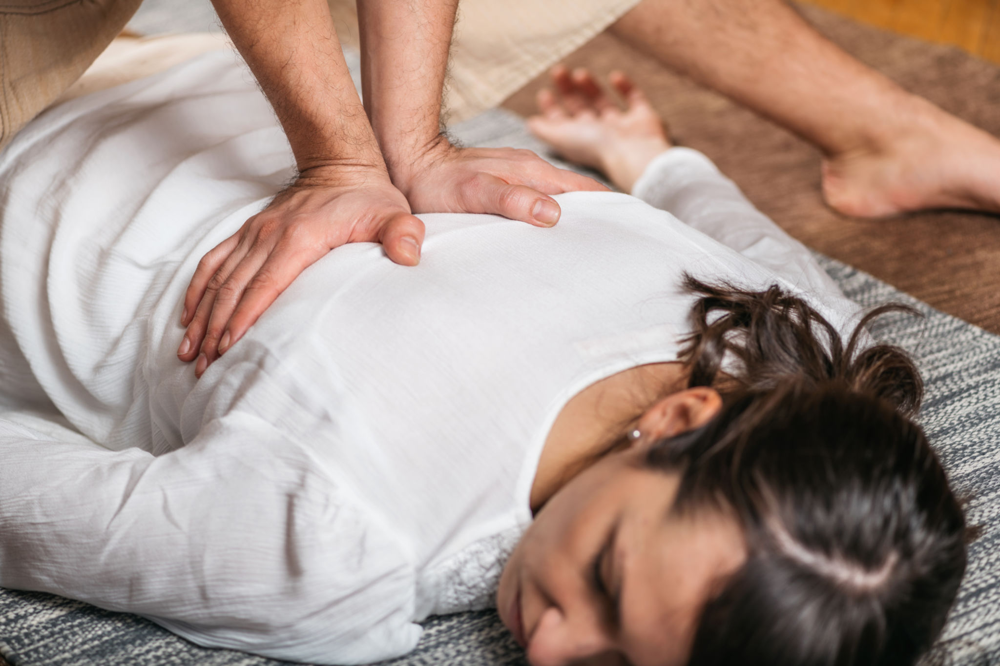

INHALA
Un espacio para reconectar contigo.



Un espacio para reconectar contigo.
En Inhala creemos en un bienestar que se respira, se mueve y se comparte. Nuestro centro es un refugio de calma donde el cuerpo y la mente encuentran equilibrio.
Guiados por profesionales apasionados, te ofrecemos un espacio para reconectar contigo mismo a través de yoga, meditación y conciencia corporal.
| Hora | Lunes | Martes | Miércoles | Jueves | Viernes | Sábado |
|---|---|---|---|---|---|---|
| 07:00 | Pranayama | — | Respiración | — | Pranayama | — |
| 08:00 | Hatha Yoga | Pilates | Vinyasa Flow | Pilates | Hatha Yoga | Clase especial |
| 09:30 | Yoga Suave | Yoga Embarazo | Yin Yoga | Yoga Suave | Yoga Embarazo | — |
| 11:00 | Meditación | Pranayama | Meditación | Mindfulness | — | Taller mensual |
| 13:00 | — | — | — | Charla bienestar | — | — |
| 17:00 | Yoga Restaurativo | Yin Yoga | Yoga Niños | Yoga Restaurativo | Yoga Suave | — |
| 18:30 | Vinyasa Flow | Pilates | Hatha Yoga | Vinyasa Avanzado | Pilates | — |
| 20:00 | Meditación Guiada | Yin & Sonido | Meditación | Círculo de Voz | Yin Yoga | — |
| 21:00 | — | — | Satsang | — | — | — |
Esencia equilibrada para cuerpo y mente Practica pausada enfocada en la alineación, la respiración y el control consciente del movimiento. Ideal para quienes buscan una base sólida y reconectar con su cuerpo. Aquí cultivamos fuerza suave, flexibilidad consciente y una presencia plena en cada postura. ✨
Impartida por: Laura TorresEnergía en movimiento, respiración en danza Una práctica dinámica donde cada postura fluye con la respiración. Despierta el cuerpo, revitaliza la mente y libera tensiones acumuladas. Cada sesión es un viaje creativo donde el movimiento se convierte en meditación activa. 🔥 Ideal si te gusta moverte.
Impartida por: Marcos RuizSilencio, quietud y profundidad Explora la quietud interna mientras permaneces en posturas pasivas durante más tiempo. Estira las capas más profundas del cuerpo y libera bloqueos físicos y emocionales. Yin es el arte de soltar. 🌿 Perfecta para el final del día o para equilibrar un estilo de vida activo. Necesario para cualquiera
Impartida por: Andrea LópezActiva tu centro, cuida tu columna Técnica centrada en la alineación postural, la amplia conciencia corporal y el fortalecimiento suave. Desarrolla estabilidad, elongación y tono muscular desde adentro hacia afuera. 🌀 Recomendado para mejorar postura, prevenir lesiones y potenciar tu movimiento diario.
Impartida por: David CamposUn refugio para el sistema nervioso Posturas sostenidas con soportes, sin esfuerzo. El objetivo es simplemente descansar profundamente. Esta clase te permite resetear el cuerpo y la mente desde un espacio de cuidado total. 💤 Ideal para personas con estrés, ansiedad, fatiga crónica o estrés acumulado.
Impartida por: Ana PuigPresencia en calma, mente en silencio Exploramos distintas técnicas de meditación para cultivar atención plena, reducir la ansiedad y reconectar con la respiración y el cuerpo. Aprendes a observar sin juicio y a sostenerte en el presente. 🌾 Abierto a todos los niveles, con o sin experiencia previa.
Impartida por: Marta VidalEnergía vital en movimiento Descubre el poder de tu respiración a través de técnicas tradicionales de control y expansión del prana. Mejora tu capacidad pulmonar, claridad mental y equilibrio emocional. 💨 Ideal como práctica propia o complemento de cualquier estilo de yoga.
Impartida por: Javier RíosTu lugar seguro para rendirte al descanso Posturas sostenidas con soportes, sin ningún esfuerzo. Cada clase es un bálsamo profundo para el sistema nervioso y un espacio de restauración integral. 🕯️ Para quienes buscan calma, cuidados suaves y reconectar con su energía vital.
Impartida por: Paula MartínezCuerpo en juego, corazón en calma Actividades divertidas que combinan movimiento, imaginación y respiración consciente. Fomentamos la autoestima, la coordinación y el vínculo con el entorno desde el juego. 🌈 Clases adaptadas a edades y ritmos, siempre con alegría y contención.
Impartida por: Clara NavarroIntensidad, desafío, complejidad controlada y expansión Una secuencia más vigorosa y creativa, con transiciones fluidas, inversión de posturas y exploración de tus límites físicos y mentales. ⚡ Recomendado para practicantes con experiencia que buscan profundizar.
Impartida por: Marcos RuizExpresa, vibra y libera desde lo más profundo Espacio colectivo para explorar la voz como canal emocional y energético. A través del canto consciente, la improvisación y la vibración compartida, abrimos el centro del pecho. 🎶 No necesitas cantar “bien”, solo ganas de resonar desde el corazón.
Impartida por: Alicia MoralesTemas especiales, experiencias transformadoras Cada mes exploramos una temática diferente: desde yoga y astrología hasta cocina ayurvédica, danza medicina o escritura consciente. 🌟 Oportunidad para profundizar, compartir en comunidad y expandir perspectivas.
Impartido por: Equipo InhalaEncuentro con la verdad a través del corazón Reunión grupal para reflexionar, compartir y meditar en torno a enseñanzas inspiradoras. Escuchamos, nos escuchamos y volvemos al centro a través del diálogo profundo y la presencia. 🕊️ Abierto a toda la comunidad, sin jerarquías ni expectativas.
Guiado por: Equipo InhalaNos encontramos en el corazón de Barcelona, en un entorno tranquilo y accesible.
¿Tienes dudas o quieres hablar con nosotros? Estamos aquí para acompañarte.
Carrer de l'Harmonia 17, 08012 Barcelona
Lunes a Viernes · 8:00 - 21:00
Sábados · 9:00 - 14:00
Profesor/a: